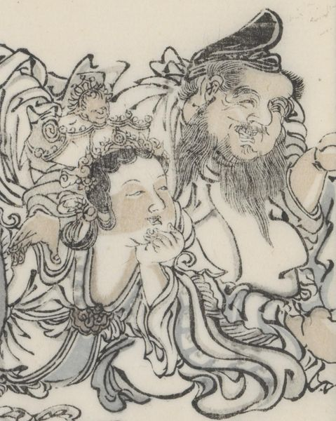

← 图鉴索引

恵比寿が弁才天の肩を抱いている。
著作者：河鍋暁斎／出典：親書誌：U426_nichibunken_0442：暁齋畫談／日付：2017／資源識別子：U426_nichibunken_0442_0003_0001
Copyright (c)2010- International Research Center for Japanese Studies, Kyoto, Japan. All rights reserved.